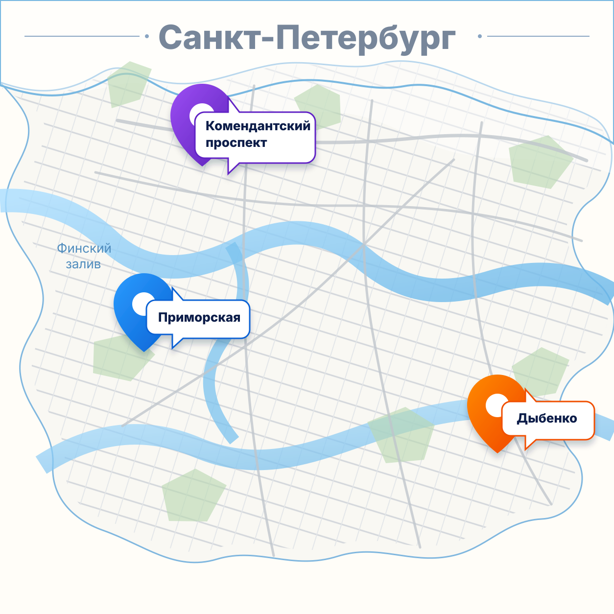

Классический geo-split
Есть продукт, бренд, креативы, посадочная страница и понятный путь клиента.
Не классический geo-split
Сначала собираем минимально жизнеспособную маркетинговую упаковку, затем проверяем спрос в выбранных географиях и принимаем решение о масштабировании.
Почему меняется логика
Есть продукт, бренд, креативы, посадочная страница и понятный путь клиента.
Проект на стадии стартапа, поэтому сначала создаём основу: смыслы, оффер, лендинг и сбор заявок.
Состав работ
Каждый этап можно раскрыть: внутри показана роль этапа в проверке спроса.
Предварительная структура
Передвиньте рекламный бюджет и включите таргетинг, чтобы увидеть, как меняется итог, точность прогноза и доля по районам.
Команда, лендинг и рекламный тест в трёх районах Санкт-Петербурга.

Можно точнее разделять аудитории, быстрее понять, какие сегменты реагируют на оффер, и снизить риск выводов по слишком общей рекламе.
Дополнительный бюджет помогает не только получить больше лидов, но и повысить уверенность в сравнении районов и сообщений.
Доходы, аренда, конкуренция, ценовые коридоры и рекомендации по Комендантскому, Приморской и Дыбенко.
На что влияет увеличение рекламного бюджета
При маленьком бюджете может быть слишком мало кликов, заявок и реакций. Больше бюджет повышает уверенность в выводах.
Больше данных помогает понять, какой район реально сильнее, где ниже стоимость заявки и где выше интерес.
Бюджет позволяет быстрее набрать статистику и раньше понять, работает гипотеза или нет.
При большем бюджете можно проверять разные офферы, заголовки, креативы, сегменты и посадочные смыслы.
Рекламные системы получают больше сигналов о кликах, заявках и аудиториях, которые реагируют лучше.
Снижается риск ложного вывода “продукт не нужен рынку”, если проблема была в малом объёме трафика.
Роль нейросетей
Нейросети помогают быстрее собрать варианты смыслов, креативов и текстов, но стратегию, контроль качества, настройку теста и анализ результата всё равно делает команда.
Демонстрация страниц
Проектный документ · версия 1.0
Клиент: Алена. Исполнитель: Дмитрий Мо / проектная команда. Тип проекта: маркетинговый запуск стартапа в формате MVP + geo-split тест. Методологическая рамка: PMI / проектный подход.
Ориентировочная длительность проекта от инициации до финального отчета.
Название, позиционирование, оффер, ключевые сообщения, структура лендинга и система заявок.
Три локации, ключевые запросы, рекламные кампании, распределение бюджета и мониторинг.
Данные по спросу, сравнению географий, качеству заявок и рекомендациям по следующему этапу.
Создать минимально жизнеспособную маркетинговую упаковку стартапа и провести geo-split тест в 3 локациях для первичной проверки спроса, оценки реакции аудитории и подготовки рекомендаций.
Рабочий MVP-маркетинговый контур: нейминг, позиционирование, оффер, лендинг, форма заявок, рекламная логика, запуск теста, данные по расходам и итоговый отчет.
Лендинг опубликован, заявки собираются, реклама запущена по 3 локациям, бюджет расходуется прозрачно, данные собраны, выводы и рекомендации подготовлены.
Продукт проекта — не отдельный лендинг и не отдельная рекламная кампания, а целостная тестовая маркетинговая система для проверки спроса стартапа.
| № | Результат | Описание | Формат |
|---|---|---|---|
| 1 | Базовая стратегия MVP | Смысловая рамка, аудитория, оффер, позиционирование | Документ / презентация |
| 2 | Рабочее название | Вариант нейминга для тестового запуска | Список / выбранный вариант |
| 3 | Маркетинговый кит | Ключевые смыслы, сообщения, структура оффера | Документ |
| 4 | Структура лендинга | Блоки страницы и логика подачи | Документ / прототип |
| 5 | Тексты лендинга | Заголовки, описания, CTA, формы | Текстовый документ |
| 6 | Лендинг | Рабочая посадочная страница | Web-страница |
| 7 | Система предзаказа / заявки | Форма фиксации интереса | Форма / таблица / CRM-lite |
| 8 | Семантика по локациям | Ключевые запросы по 3 географиям | Таблица |
| 9 | Рекламные кампании | Настроенные кампании по выбранным локациям | Рекламный кабинет |
| 10 | Мониторинг бюджета | Контроль расходов и заявок | Таблица / отчет |
| 11 | Финальный отчет | Выводы по спросу и рекомендации | Документ / презентация |
Вводная встреча, сбор материалов, бизнес-гипотеза, цели, критерии успеха, состав работ.
Анализ идеи, аудитория, продуктовая гипотеза, название, позиционирование, оффер, сообщения.
Структура лендинга, тексты, рекламные сообщения, клиентский путь, визуальные рекомендации.
Сборка страницы, форма заявки / предзаказа, проверка отображения и готовность к трафику.
3 локации, ключевые запросы, рекламная структура, распределение бюджета и подготовка запуска.
Настройка кампаний, запуск, контроль расхода, мониторинг заявок, промежуточные наблюдения.
Данные, анализ по локациям, стоимость заявки, выводы, рекомендации, финальная встреча.
| Этап | Длительность | Результат |
|---|---|---|
| Инициация и сбор вводных | 2-3 рабочих дня | Цели, вводные, гипотезы |
| Стратегическая сборка MVP | 5-7 рабочих дней | Название, позиционирование, оффер |
| Маркетинговая упаковка | 5-7 рабочих дней | Структура, тексты, рекламные сообщения |
| Разработка лендинга | 5-7 рабочих дней | Запущенная посадочная страница |
| Подготовка geo-split | 3-5 рабочих дней | Локации, запросы, структура кампаний |
| Рекламный тест | 10-14 календарных дней | Данные по отклику аудитории |
| Аналитика и отчет | 3-5 рабочих дней | Итоговый отчет и рекомендации |
Стратегия, упаковка, управление, запуск, аналитика.
Сборка страницы и формы заявки / предзаказа.
3 локации примерно по 33 000 ₽.
Дополнительная проверка сегментов, сообщений и точности сравнения.
Рекомендуемая оплата: 50% на старте, 30% после готовности упаковки и лендинга, 20% перед рекламным тестом или финальной аналитикой.
Логика проекта, позиционирование, оффер, контроль качества, коммуникация.
Запросы, geo-split логика, рекламная структура, аналитика.
Лендинг, форма заявки, техническая проверка.
Вводные, согласование решений, принятие ключевых решений.
| Работа | Стратег | Маркетолог | Тех. специалист | Клиент |
|---|---|---|---|---|
| Сбор вводных | A/R | C | I | R |
| Название, позиционирование, оффер | A/R | C | I | A/C |
| Структура и тексты лендинга | A/R | C | C/I | A/C |
| Сборка лендинга | C | I | A/R | C |
| Запросы и реклама | C | A/R | I | I |
| Мониторинг и отчет | A/R | R | I | C/I |
Правило согласований: обратная связь по названию, офферу, структуре лендинга, сообщениям и локациям желательна в течение 1-2 рабочих дней.
Проводим интервью и фиксируем гипотезы до старта упаковки.
Ограничиваем итерации и заранее определяем дедлайны.
Рассматриваем как результат теста и анализируем причины.
Позиционируем проект как MVP geo-split / первичную рыночную проверку спроса.
Финальный отчет включает гипотезу, созданную MVP-упаковку, структуру лендинга и оффера, выбранные локации, бюджет, данные по заявкам / предзаказам, сравнение географий, выводы по спросу, слабые места и рекомендации по следующему этапу.
В вашем случае это не классический geo-split в чистом виде. Перед тестом нужно собрать минимально жизнеспособную маркетинговую упаковку: название, позиционирование, оффер, ключевые сообщения, структуру лендинга и систему сбора заявок / предзаказов.
Предварительный базовый бюджет составляет около 290 000 ₽: 150 000 ₽ — работа проектной команды, 40 000 ₽ — разработка и запуск лендинга, 100 000 ₽ — рекламный бюджет на 3 локации. Дополнительно можно включить таргетинг, чтобы точнее проверить сегменты и сообщения. Итогом станет не обещание продаж, а ясность: есть ли спрос, где он проявляется, что нужно доработать и стоит ли масштабировать проект дальше.
Следующий шаг